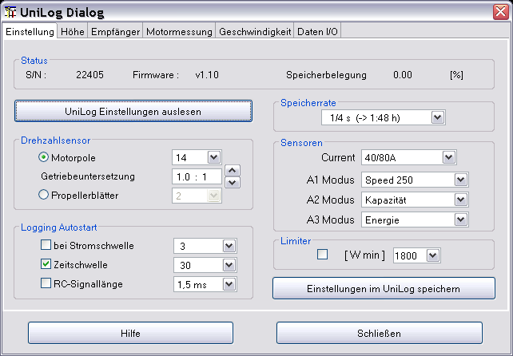
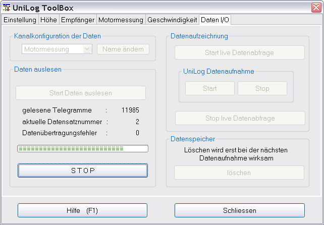
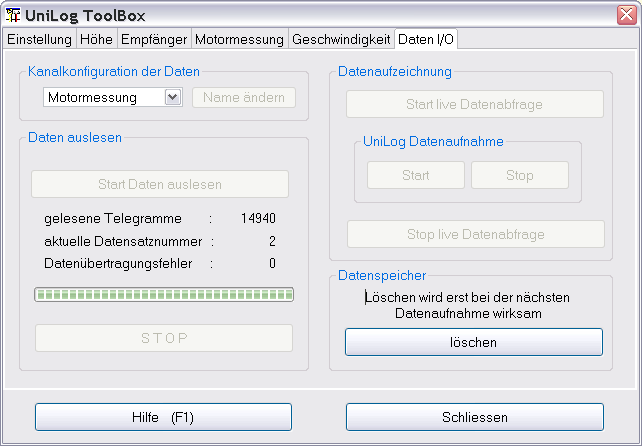
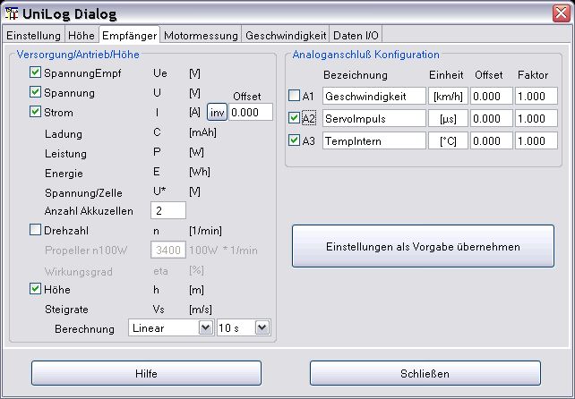
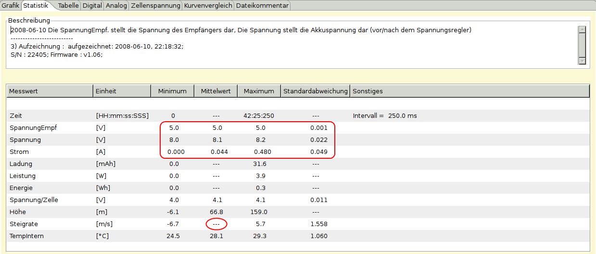
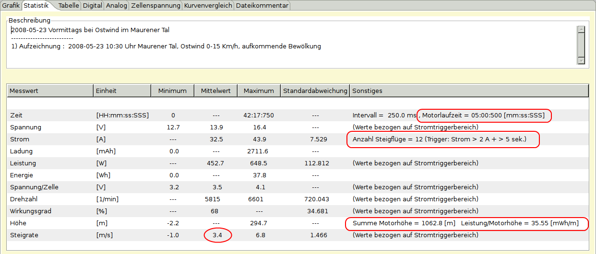
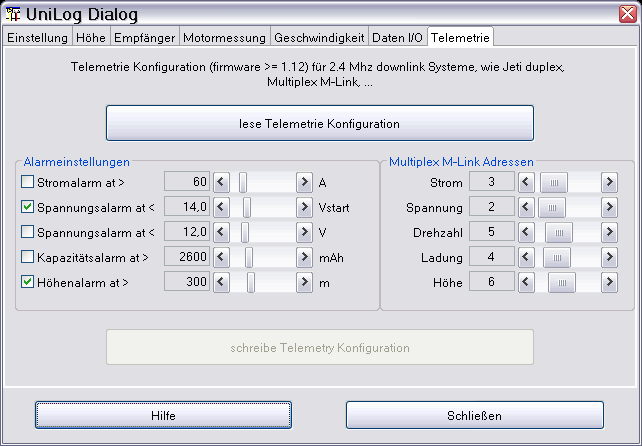

Der UniLog-Gerätedialog dient zur Visualisierung der UniLog "Einstellungen" und deren Konfiguration. Über den letzten Dialogtabulator "Daten I/O" können die im Gerät gespeicherten Daten abgeholt und dann angezeigt werden. Um nun die Datenanzeige zu beeinflussen, sind die vier mittleren Dialogtabulatoren da. Hier kann jeder selbst sinnvolle Konfigurationen zusammenstellen. Im initialen Zustand sind das, sozusagen als Vorschlag
Höhe, einfache Höhenmessung mit geringstem Zusatzgewicht fürs Flugmodell
Empfänger, hier wird zusätzlich zur Höhe die Empfängerversorgung vermessen, um z. B. benötigte Spannungsreglerleistung abzuschätzen
Motormessung, hier wird die Motorleistung vermessen, z. B. kann man den Regler optimal einstellen oder Auswirkungen von Luftschraubenvariationen beurteilen
Geschwindigkeit, Auswirkung von Luftschrauben auf die Geschwindigkeit oder einfach nur die Gleitgeschwindigkeit
Alternativ kann man aber die Konfigurationen so abändern, das sie z. B. Modell_1 bis Modell_4 abbilden.
Viele Felder sind mit Hilfetexten hinterlegt und sollten diese Beschreibung für den weiteren Gebrauch weitestgehend überflüssig machen. Die Texte werden durch den darüber gehaltenen Mauszeiger sichtbar.
Die aktuelle Dialogimplementierung entspricht dem UniLog Firmware Stand 1.19.
Nachdem die serielle Schnittstelle über den Geräteauswahldialog eingestellt ist und der Eingabedialog aufgerufen ist, kann durch drücken von „Einstellungen auslesen“ die aktuelle UniLog-Konfiguration ausgelesen werden. Das Resultat ist beispielhaft in Bild 1 zu sehen.

Alle analogen Anschlüsse werden ab Firmware 1.10 vorkonfiguriert. Aktiviert man die "Limiter"-Funktion wird ab dem eingestellten Leistungsverbrauch das Signal zum Motorregler heruntergeregelt. Hierzu muss natürlich der Reglersignal über den UniLog geschleift werden. Bei "Limiter"-Betrieb wird das Zeitintervall auf 1/16 Sekunde verändert und es ist nur eine Datenaufnahme möglich.
Werden Einstellungen verändert, wird „Einstellungen im UniLog speichern“ aktiv. Durch drücken werden die gewählten Einstellungen in das UniLog geschrieben.
Hinweis: Es ist sinnvoll vor der Änderung einer Einstellung erst einmal die aktuelle Konfiguration auszulesen. Sonst wundert man sich, dass andere Einstellungen auch verändert wurden.
Im initialen Zustand sind alle Knöpfe aktiv, die ein Einlesen von Daten auslösen. Durch die Auswahl einer Konfiguration werden die eingelesenen Daten direkt zugeordnet. Es besteht die Möglichkeit, die Daten später mit einer anderen Konfiguration zu verknüpfen oder die Konfiguration individuell für jeden Datensatz anzupassen. Nur der „löschen“-Knopf bildet hier eine Ausnahme. Wie beschrieben wird der Speicher zwar als gelöscht markiert, kann aber bis zur nächsten Datenaufnahme weiterhin gelesen werden.
Nach drücken von „Start Daten auslesen“ werden die im Gerät gespeicherten Daten ausgelesen und entsprechend der gewählten Konfiguration aufbereitet.
Über „Start live Datenabfrage“ werden entsprechend der Einstellung der Speicherrate, zyklisch Daten ausgelesen und in der Anwendung angezeigt. Betätigt man zusätzlich den „Start“-Knopf der UniLog-Datenaufnahmegruppe, werden ab diesem Zeitpunkt auch die Messdaten im UniLog selbst gespeichert. Durch Betätigung der „Start“-Knöpfe werden immer die entsprechenden Gegenoperationen aktiviert.

Am Ende der Datenübertragung werden die Messdaten aufbereitet und angezeigt. Der Dialog ist dann wieder im initialen Zustand, nur der Fortschrittsbalken ist gefüllt und die Anzahl der ausgelesenen Telegramme wird angezeigt.

Über den Tabulator "Daten I/O" kann man den Konfigurationsnamen beliebig anpassen. Durch drücken von „Name ändern“ wird der Änderungsmode aktiviert und man kann den Namen verändern. Nach drücken der Entertaste wird der neue Name sofort in der Gerätekonfiguration persistent gemacht und ist aktiv.
Dies ist ein komplexer Tabulator und zeigt alle Geräteeingänge bzw. Messgrößen als Schalter an. Werden Messgrößen ausgewählt, werden die davon abhängigen errechenbaren Messgrößen mit aktiviert. Als Beispiel soll hier die Konfiguration "Empfänger" genommen werden.

Wählt man jetzt die Messgröße Höhe an, wird die davon abhängige Steigrate ebenfalls aktiviert und die Berechnungsauswahl wird veränderbar.
Bei der Berechnung der Steigrate werden zwei Regressionsverfahren angeboten, bei der das Integrationsintervall zwischen einer und 20 Sekunden anpassbar ist.
Jede Änderung wird sofort für den aktuellen Datensatz angewendet und aktiviert den „Einstellungen als Vorgabe übernehmen“-Knopf, mit dem die geänderte Konfiguration persistent gemacht wird. Die Konfiguration aus der Datei wird, bei neu aus dem UniLog gelesenen Daten, angewendet
Nun zu den Analoganschlüssen (A1 bis A3). Alle Anschlüsse werden über den Tabulator "Einstellung" vorkonfiguriert. Beim Auslesen der Daten werden, entsprechend der UniLog Einstellung, Name und Einheit abgerufen und eingetragen. In Abhängigkeit der Einstellung und dem angeschlossenen Sensor muss eventuell noch Offset und der Steigungsfaktor angepasst werden. Auch hier gilt, eine Änderung aktiviert „Konfiguration speichern“ und ermöglicht das Abspeichern der Konfiguration in der UniLog Konfigurationsdatei, nicht im UniLog selbst.
Ist beim Öffnen des Dialoges ein Datensatz geladen, springt der Konfigurationstabulator auf die dem Datensatz entsprechende Konfiguration. Passt die Datensatzkonfiguration nicht zu den Daten, bekommt man durch Anwahl des gewünschten Konfigurationstabulators die Möglichkeit, die Daten in eine andere Konfiguration zu überführen.
Hinter den verschiedenen Konfigurationstabulatoren stecken unterschiedliche statistische Berechnungen. Als Beispiel wird in den nächsten Bildern eine Statistik entsprechend der Empfängerkonfiguration gezeigt.

Nun folgt ein Beispiel für eine Motormessung, die wichtigsten Daten bzw. Änderungen gegenüber der Empfängermessung sind rot umrandet.

Hinweis: Falls vier Konfigurations-Tabulatoren zu viel sind kann man durch eine Änderung der UniLog.xml die Anzahl reduzieren (auskommentieren in XML mit <!-- Kommentar -->). Mehr wie vier Tabulatoren für noch mehr Konfigurationen ist möglich, aber nicht implementiert. Selbstverständlich ist es auch möglich alle Messgrößen zu aktivieren und nur über die Schalter im Kurvenselektor zu filtern.
Über den Telemetrietabulator lassen sich alle Telemetrieeinstellungen, für die relevanten unterstützten Sender-/Empfänger-Systeme einstellen. Unterstützt sind aktuell Jeti Duplex, Futaba und Multiplex M-Link, seit dem UniLog-Firmware-Level 1.12. Als erstes sollte man die im UniLog abgelegten Konfigurationsdaten einlesen und erst dann unter Zuhilfenahme der Sender-, Empfängertelemetriebedienungsanleitung die entsprechende Konfiguratin verändern.

Wird eine Einstellung verändert, wird auch der Knopf freigeschaltet, der ein Übertragen der veränderten Telemetriekonfiguration in das UniLog ermöglicht.